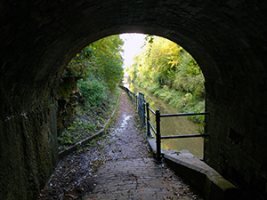

This photo of 17 narrow locks in Stoke Bruerne. Stoke Bruerne is mentioned in the Domesday Book in 1086 as "Stoche" meaning "an outlying farmstead or hamlet". The form "Stokbruer" is used in 1254 being a suffix by the "Briwere" family of the Manor House. The village is fairly typical for this area of south Northamptonshire containing many traditional stone and thatched cottages. The village's main claim to fame is its situation on the Grand Union Canal making it a favourite destination for tourists. The population is split 196 male and 199 female in 169 households (2001 census). Stoke Bruerne is also a home to The Canal Museum, Stoke Bruerne. This photo was taken on October 13, 2020.

|

|
 |
By Kate on October 15. 2020
Looking good. Did you get to visit the museum?
Bv John on October 17. 2020
I love walking alongside the canal. So soothing.